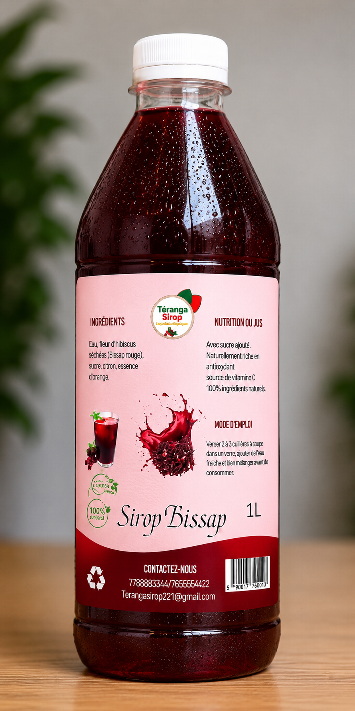
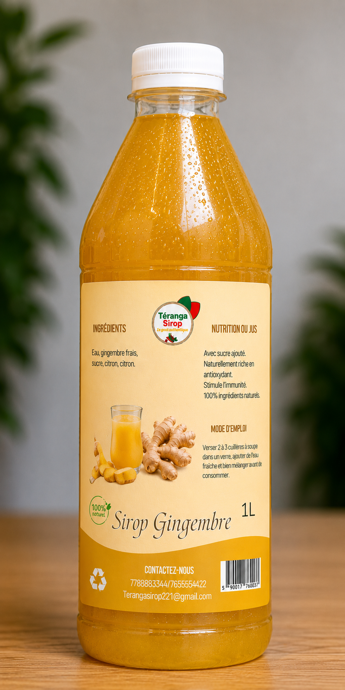
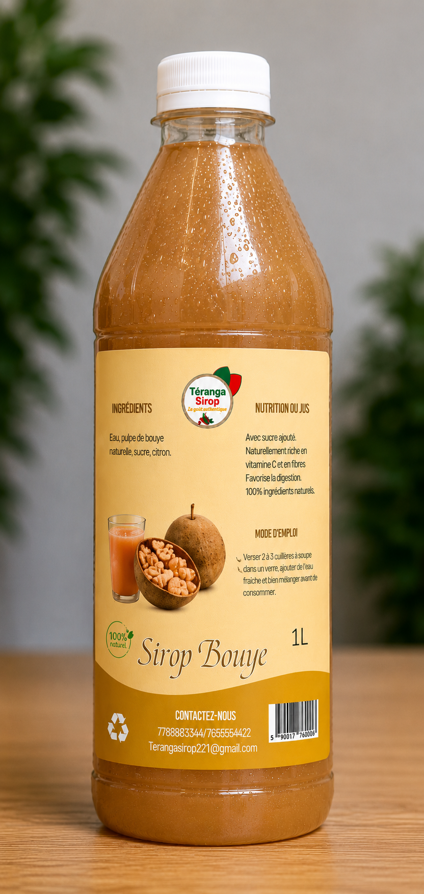
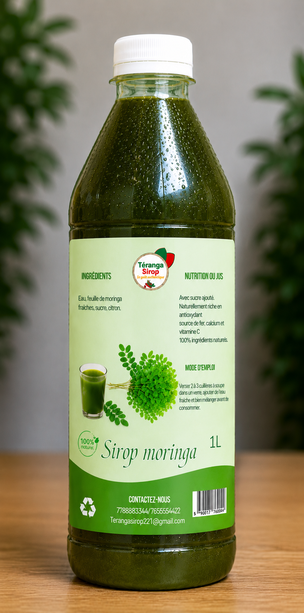
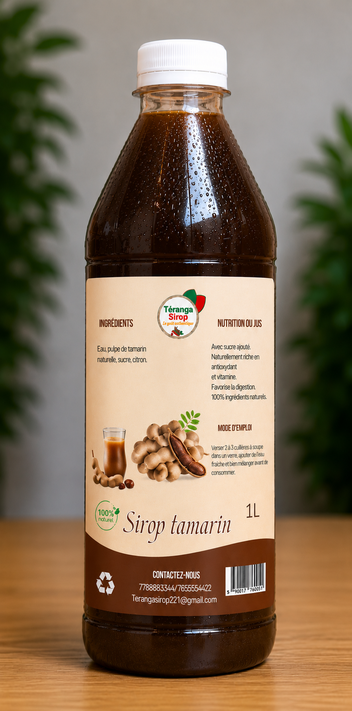

Nos Produits
Nos Sirops Authentiques
6 saveurs uniques, chaque bouteille de 1L est une explosion de saveurs naturelles
Populaire

Rouge profond
Sirop Bissap
Fleur d'hibiscus séchée, sucre, citron, essence d'orange. Riche en antioxydants et vitamine C.
Commander
Doré délicat
Sirop Bissap Blanc
Fleurs d'hibiscus blanches, sucre, citron, essence de vanille. Douceur et fraîcheur.
CommanderÉnergie

Ambre vibrant
Sirop Gingembre
Gingembre frais, sucre, citron. Stimule l'immunité et redonne de l'énergie.
Commander
Brun onctueux
Sirop Bouye
Pulpe de bouye naturelle, sucre, citron. Riche en vitamine C et fibres, favorise la digestion.
CommanderSuperfood

Vert profond
Sirop Moringa
Feuilles de moringa fraîches, sucre, citron. Source de fer, calcium et vitamine C.
Commander
Marron riche
Sirop Tamarin
Pulpe de tamarin naturelle, sucre, citron. Riche en antioxydants, favorise la digestion.
Commander